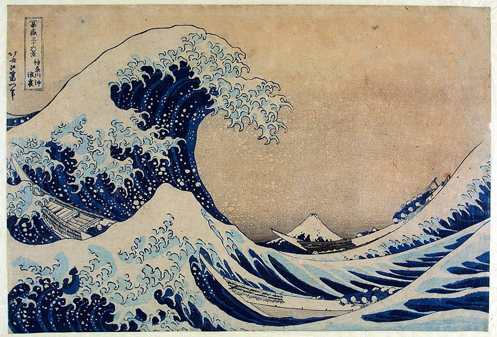

History
Edo Period
Tokyo was originally a fishing village called Edo. It was first fortified by
the Edo Clan in the 12th century.
This was also where the centre of the government was stationed during this period.
[1]
1869 - 1943
After the reign of the Shogun had ended, Emperor Meiji moved from Kyoto to Edo. The city was
renamed to Tokyo which means “Eastern Capital” and it became the official capital of Japan.
Before that it already was the center of politics and culture.[1]
More History
There's so much history about Tokyo, click here for more!